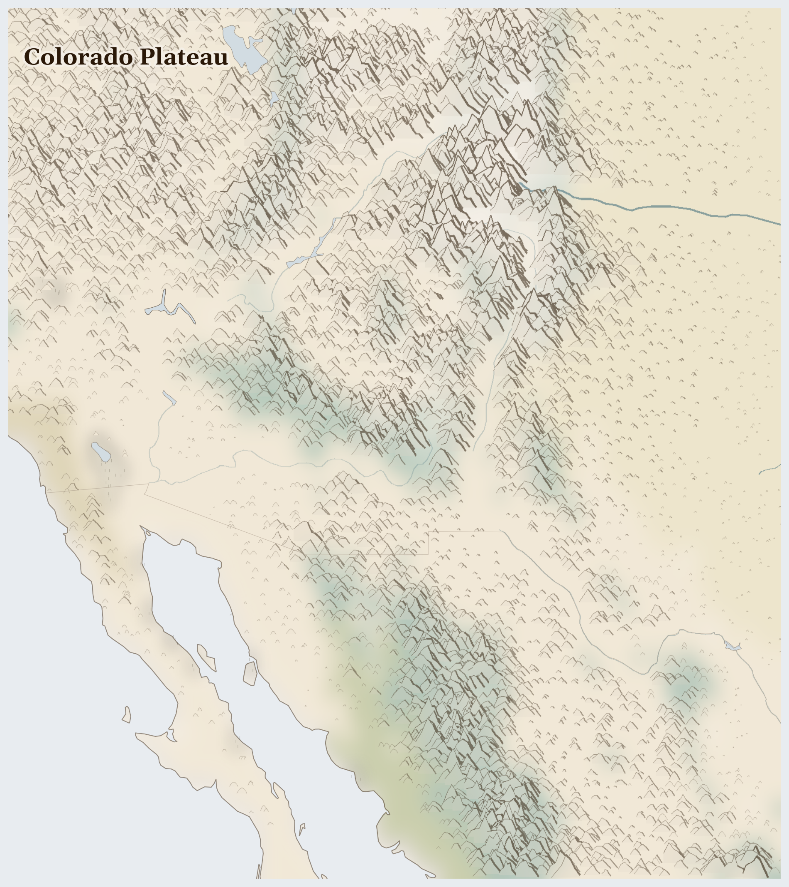

Colorado Plateau
Mexico, United States
Nearctic
A land of red rock in the American Southwest, where a river spent millions of years carving a canyon so deep and wide it takes your breath away — the Grand Canyon. The Navajo, Hopi, and other nations have lived among these mesas and cliffs for longer than anyone can count, some in villages built into the rock itself.
How Life Works Here
This is a dry land where every drop of water matters. Families herd sheep, weave, and farm corn and beans in the sandy soil the way their ancestors did. The great Colorado River is shared — carefully, and sometimes with argument — between many states and cities far away.
Bureau of Reclamation (federal water manager), Tribal nations with senior but unfulfilled water rights, Municipal water utilities (LA, Phoenix, Las Vegas, San Diego).
Large-scale irrigators (Imperial Valley, Yuma, Pinal County), Farmworkers (largely Mexican and Central American, largely undocumented).
Mining corporations (Freeport-McMoRan, Lithium Americas), Tribal nations on or near concession lands.
What Is Happening
This is a quiet, spacious place with a real worry: not enough water. The river that carved the canyon is running lower as the land grows hotter and drier, and it must be shared among a great many people. Long ago, some mining here left land and water unsafe for Native families. But the nations here are wise about the desert — they are teaching old ways of saving every drop, and working to heal the land that was harmed.
Something Wonderful
A single river, patient over millions of years, cut a canyon a mile deep — so deep that the rock at the bottom is some of the oldest you can touch anywhere on Earth. Standing at the top, you are looking at almost half the history of the whole planet, written in colored stripes.
Let's Do Something Together
Cloud Watching for Rain
Lie on your back and watch the clouds. Big puffy clouds might bring rain! Thin wispy clouds usually mean dry weather. In places where it has not rained for a long time, families watch the sky every day and hope for clouds. Imagine waiting and waiting for rain that does not come.
- blanket for lying on
- sky with clouds
For grown-ups
Prolonged drought triggers cascading crises — crop failure, livestock death, water scarcity, displacement. Communities develop sophisticated indigenous weather knowledge that climate change is now invalidating.
Let Us Pray Together
God, send the rain. Be with families who are waiting and hoping.
Leader: We pray for the displaced. For the hundreds of thousands driven from their homes.
All: Lord, hear our prayer.
Leader: We pray for water and land. For the land itself, its rivers and aquifers stretched thin across the region.
All: Lord, hear our prayer.
Leader: We pray for Mexico. Especially for Mexico, facing the most severe convergence of crises in this region.
All: Lord, hear our prayer.
Leader: We pray for the helpers. For humanitarian workers and missionaries in Colorado Plateau.
All: Lord, hear our prayer.
O praise the Lord, all you nations; praise him, all you peoples. For great is his steadfast love towards us, and the faithfulness of the Lord endures for ever. Alleluia.
Collect
Lord of all power and might, the author and giver of all good things: graft in our hearts the love of your name, increase in us true religion, nourish us with all goodness, and of your great mercy keep us in the same; through Jesus Christ your Son our Lord, who is alive and reigns with you, in the unity of the Holy Spirit, one God, now and for ever.
Amen.
Talk About It
In the desert, people are careful with every drop of water. If your family had only one bucket of water for a whole day, what would you use it for first?
One Thing We Can Do
Fill a glass only as full as you'll actually drink today — pour none away. As you drink it, remember the desert families who treasure every drop, and thank God for water.